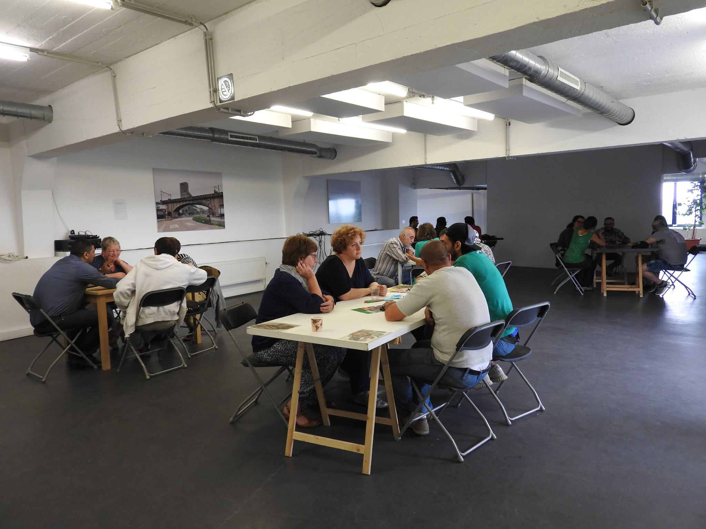

Les demandeurs d’asile et réfugiés sont souvent confrontés à des préjugés dus à un manque de connaissance sur leur parcours, les motifs de leur arrivée en Belgique, leurs difficultés et perspectives d’avenir,…
Afin de mieux faire comprendre la réalité et le parcours des réfugiés et de diminuer les préjugés, Convivial propose régulièrement des séances de sensibilisation et d’information destinées au grand public, à des travailleurs sociaux, à des écoles supérieures, …

Le canevas proposé s’articule autour de :
Une animation interactive: Qu’est-ce qu’un réfugié ?
Répartition des réfugiés dans le monde
Une exposition didactique: Pourquoi le réfugié quitte-t-il son pays ? Le voyage ? Comment arrivent-ils en Belgique et en Europe ? Qu’est-ce que la procédure d’asile ? Comment se passe l’insertion en Belgique une fois le statut obtenu ?
Un film ou un témoignage d’un réfugié
Une présentation de Convivial
Informations pratiques
Prochaines sessions :
12 juillet 2018 de 13h à 15h45
28 août 2018 de 13h à 15h45
Les séances tout public sont organisées lorsque nous avons un minimum de 7 participants. Veuillez vous inscrire via l’adresse sensibilisation@convivial.be